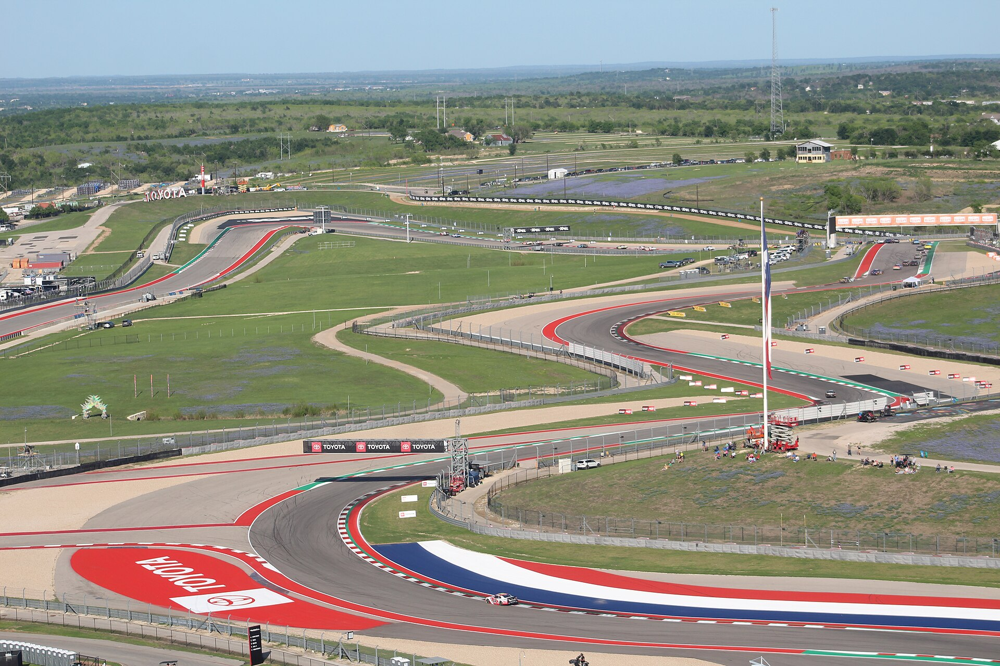

A Fórmula 1 retorna às pistas neste fim de semana para o Grande Prêmio dos Estados Unidos de 2026, disputado no Circuit of The Americas, em Austin, no Texas. A corrida acontece no domingo, 25 de outubro, às 17h, pelo horário de Brasília, e marca o início de uma sequência importante de provas no continente americano.
A etapa reúne ingredientes que tornam Austin uma das corridas mais interessantes do calendário: um traçado técnico, mudanças de elevação, curvas de alta velocidade, fortes pontos de frenagem e possibilidades de estratégias diferentes.
O GP também chega em um momento importante do campeonato. Kimi Antonelli, da Mercedes, lidera a classificação de pilotos e tem sua primeira oportunidade matemática de conquistar o título mundial. George Russell, Lewis Hamilton e Max Verstappen aparecem entre os principais perseguidores do italiano.
Datas e horários do GP
O fim de semana em Austin será disputado no formato tradicional, com três sessões de treinos livres, classificação e corrida principal. Diferentemente das edições anteriores, o circuito não receberá uma corrida sprint em 2026.
Confira a programação completa, com horários de Brasília:
Sexta-feira, 23 de outubro
- Treino livre 1: 14h30 às 15h30
- Treino livre 2: 18h às 19h
Sábado, 24 de outubro
- Treino livre 3: 14h30 às 15h30
- Classificação: 18h às 19h
Domingo, 25 de outubro
- Corrida: 17h
- Distância prevista: 56 voltas
A programação está sujeita a alterações pela organização da Fórmula 1.
No Brasil, a temporada 2026 conta com transmissões do Grupo Globo. O sportv oferece cobertura ao vivo dos treinos, classificações e corridas.
Como é o Circuito das Américas
Localizado em Austin, no Texas, o Circuit of The Americas, conhecido pela sigla COTA, recebeu sua primeira corrida de Fórmula 1 em 2012 e rapidamente se consolidou como uma das pistas mais características da categoria.
O circuito foi projetado por Hermann Tilke, em colaboração com a empresa de arquitetura HKS, e incorpora elementos inspirados em alguns dos traçados mais famosos do automobilismo mundial.
Os números do circuito são:
- Extensão: 5,513 quilômetros
- Número de voltas: 56
- Distância total da corrida: 308,405 quilômetros
- Recorde oficial de volta: Charles Leclerc, com 1min36s169, em 2019
Uma das características mais marcantes da pista é a subida em direção à primeira curva. Os pilotos chegam ao ponto de frenagem depois de uma forte aceleração, enfrentando uma entrada ampla que permite diferentes trajetórias e disputas por posição.
O primeiro setor também apresenta uma sequência de curvas rápidas inspirada em trechos de Silverstone e Suzuka. Já a região entre as curvas 12 e 15 lembra a seção do estádio de Hockenheim, exigindo controle nas frenagens e boa tração nas saídas.
Essa combinação transforma a corrida em um desafio completo. Os carros precisam apresentar velocidade nas retas, eficiência aerodinâmica nas curvas rápidas e equilíbrio nas seções mais lentas.
Austin costuma proporcionar corridas movimentadas
O traçado do Circuito das Américas oferece características favoráveis às disputas diretas entre os pilotos.
A primeira curva é um dos principais pontos de ultrapassagem, especialmente nas largadas. A forte subida seguida por uma frenagem intensa permite que os competidores tentem ganhar posições por diferentes linhas.
Outro trecho importante aparece na longa reta do segundo setor, que termina em uma forte frenagem antes da curva 12. A combinação de velocidade e desaceleração cria oportunidades para ataques.
A estratégia também pode ser determinante. O desgaste dos pneus, a temperatura do asfalto e a necessidade de equilibrar desempenho nas curvas rápidas e lentas influenciam as decisões das equipes.
Possibilidade conquista do título mundial
A principal história esportiva do GP dos Estados Unidos de 2026 envolve Kimi Antonelli.
O italiano da Mercedes chega à 18ª etapa com liderando o Campeonato Mundial de Pilotos. Seu companheiro de equipe, George Russell, ocupa a segunda posição, enquanto Lewis Hamilton aparece em terceiro.
Antonelli tem uma possibilidade matemática de conquistar o campeonato já em Austin, embora dependa de uma combinação específica de resultados.
Para garantir o título na etapa americana, o italiano precisa vencer a corrida, enquanto Russell deve terminar, no máximo, na nona posição, e Hamilton não pode chegar acima do quinto lugar.
Caso essas condições não sejam cumpridas, a definição do título ficará para as etapas seguintes.
Mesmo sem uma conquista antecipada, o cenário representa um momento importante para Antonelli. Em sua segunda temporada na Fórmula 1, o piloto italiano chega à reta final como principal candidato ao campeonato.
Max Verstappen chega em recuperação
Enquanto Antonelli tenta transformar sua vantagem em título, Verstappen chega aos Estados Unidos em uma fase positiva.
O piloto da Red Bull venceu as duas corridas anteriores, disputadas na Malásia e em Singapura. Na etapa de Singapura, também conquistou a vitória na sprint, reforçando a recuperação de desempenho da equipe.
Verstappen ocupa a quarta posição no Mundial de Pilotos antes do GP dos Estados Unidos.
A distância para Antonelli torna a disputa pelo campeonato extremamente difícil, mas o neerlandês ainda aparece como um dos nomes mais fortes na luta pela vitória em Austin.
O histórico recente também favorece suas expectativas. Em 2025, Verstappen venceu o GP dos Estados Unidos, partindo da pole position e terminando à frente de Lando Norris e Charles Leclerc.
Classificação da Fórmula 1 2026
A classificação do Mundial de Pilotos, após o GP de Singapura, apresenta a Mercedes em situação privilegiada, mas também mostra a disputa entre Ferrari, Red Bull e McLaren pelas posições seguintes.
- Kimi Antonelli — Mercedes — 340 pontos
- George Russell — Mercedes — 238 pontos
- Lewis Hamilton — Ferrari — 229 pontos
- Max Verstappen — Red Bull — 221 pontos
- Charles Leclerc — Ferrari — 215 pontos
- Lando Norris — McLaren — 201 pontos
- Oscar Piastri — McLaren — 138 pontos
- Isack Hadjar — Red Bull — 97 pontos
- Liam Lawson — Racing Bulls — 75 pontos
- Pierre Gasly — Alpine — 41 pontos
Classificação do Mundial de Construtores:
- Mercedes — 578 pontos
- Ferrari — 444 pontos
- McLaren — 339 pontos
- Red Bull — 332 pontos
Gabriel Bortoleto representa o Brasil no GP dos Estados Unidos
O piloto brasileiro disputa a temporada pela Audi, equipe que passou a integrar oficialmente o campeonato nesta nova fase regulamentar da Fórmula 1.
Bortoleto chega a Austin com 10 pontos no Mundial de Pilotos, ocupando a 15ª posição da classificação.
Para o brasileiro, a etapa americana representa mais uma oportunidade de buscar um resultado competitivo e ampliar sua pontuação.
Austin também será um teste importante para a Audi. O circuito exige eficiência em diferentes tipos de curvas, estabilidade nas frenagens e bom desempenho nas acelerações, características que ajudam a avaliar o nível de competitividade dos carros.
A importância histórica do GP dos EUA
A relação entre a Fórmula 1 e os Estados Unidos é anterior à inauguração do Circuito das Américas.
A categoria já disputou corridas em diferentes cidades e circuitos americanos, incluindo Watkins Glen, Indianapolis e outras sedes que marcaram épocas distintas do campeonato.
Austin passou a integrar essa história em 2012, quando Lewis Hamilton conquistou a vitória na primeira corrida realizada no COTA.
A prova se tornou um dos principais eventos da expansão comercial da Fórmula 1 no mercado americano. Em 2025, a categoria anunciou a extensão do contrato do circuito até 2034, garantindo sua presença no calendário por mais temporadas.
Para Hamilton, Austin também guarda lembranças importantes. O britânico confirmou títulos mundiais no circuito em 2015 e 2019, fortalecendo sua ligação com a pista texana.
O Grande Prêmio dos Estados Unidos faz parte da história do Campeonato Mundial de Fórmula 1 desde 1959, quando a primeira corrida com essa denominação foi realizada no circuito de Sebring, na Flórida. Na ocasião, o vencedor foi Bruce McLaren, pilotando um Cooper-Climax.
A estreia também ficou marcada pela conquista do primeiro título mundial de Jack Brabham. O australiano ficou sem combustível próximo da chegada e precisou empurrar seu carro para cruzar a linha na quarta posição, resultado suficiente para garantir o campeonato.
Em 1960, o GP passou por Riverside, na Califórnia, antes de encontrar sua primeira sede duradoura: Watkins Glen, no estado de Nova York. O circuito recebeu a corrida entre 1961 e 1980, período em que nomes como Jim Clark, Graham Hill, Jackie Stewart e Niki Lauda ajudaram a construir a tradição da prova.
Depois de Watkins Glen, o GP dos Estados Unidos passou por Phoenix, entre 1989 e 1991, e Indianapolis, de 2000 a 2007. O país também recebeu outras provas válidas pelo Mundial, em cidades como Long Beach, Detroit, Dallas e Las Vegas, algumas com denominações diferentes.
Após cinco anos sem uma edição do GP dos Estados Unidos, a competição retornou ao calendário em 2012, com a inauguração do Circuit of The Americas.
Desde então, Austin se consolidou como uma das principais sedes da Fórmula 1 no continente americano.
Os maiores vencedores do GP dos Estados Unidos
Lewis Hamilton é o maior vencedor da história do GP dos Estados Unidos, com seis triunfos.
O segundo colocado é Michael Schumacher, com cinco vitórias, todas conquistadas em Indianapolis pela Ferrari.
- Lewis Hamilton — 6 vitórias
- Michael Schumacher — 5 vitórias
- Jim Clark — 3 vitórias
- Graham Hill — 3 vitórias
- Max Verstappen — 4 vitórias
Verstappen conquistou três vitórias consecutivas em Austin entre 2021 e 2023 e voltou a vencer em 2025, consolidando seu nome entre os grandes vencedores da pista americana.
Ayrton Senna também faz parte da história da Fórmula 1 nos Estados Unidos. O brasileiro venceu o GP dos Estados Unidos em Phoenix, em 1990 e 1991, além de conquistar três vitórias consecutivas no GP de Detroit, entre 1986 e 1988, disputado sob outra denominação.
Esses resultados reforçam a importância do território americano na trajetória de alguns dos maiores pilotos da categoria.
Lewis Hamilton e o domínio em Austin
Além de vencer a primeira corrida da pista, em 2012, o britânico conquistou quatro vitórias consecutivas no traçado entre 2014 e 2017.
Sua trajetória em Austin inclui um momento especialmente importante: a conquista do título mundial de 2015, confirmada com uma vitória diante de Nico Rosberg e Sebastian Vettel.
A edição de 2019 também entrou para a história do circuito. Naquele ano, Hamilton garantiu seu sexto título mundial ao terminar a prova em segundo lugar, atrás de Valtteri Bottas.
Ao longo dos anos, Austin deixou de ser apenas uma nova sede americana para se transformar em palco de decisões de campeonato, disputas memoráveis e atuações marcantes de campeões mundiais.
Com essa tradição, o GP dos Estados Unidos de 2026 acrescenta mais um capítulo a uma história que começou em Sebring, passou por diferentes circuitos e encontrou em Austin uma de suas sedes mais importantes.
O que esperar do GP deste final de semana
A corrida reúne diferentes disputas em uma mesma etapa.
Antonelli busca uma vitória que pode aproximá-lo definitivamente de seu primeiro título mundial. Russell e Hamilton tentam manter vivas suas possibilidades matemáticas, enquanto Verstappen procura prolongar a sequência de bons resultados da Red Bull.
McLaren e Ferrari também terão motivos importantes para buscar desempenho, tanto na classificação de pilotos quanto no Mundial de Construtores.
O retorno ao formato tradicional oferece às equipes três sessões de treinos livres para trabalhar nos acertos, avaliar os pneus e compreender o comportamento dos carros.
Isso ganha relevância em Austin, onde as características variadas do circuito podem produzir diferenças de desempenho entre os setores.
A classificação de sábado será fundamental para definir as condições de largada, mas o traçado permite disputas e recuperações durante a prova, tornando a corrida menos dependente de uma única volta rápida do que em circuitos com poucas oportunidades de ultrapassagem.
Próximas corridas
O GP dos Estados Unidos abre uma sequência de três fins de semana consecutivos de corrida no continente americano.
- GP dos Estados Unidos: 23 a 25 de outubro
- GP da Cidade do México: 30 de outubro a 1º de novembro
- GP de São Paulo: 6 a 8 de novembro
- GP de Las Vegas: 19 a 21 de novembro
- GP do Catar: 27 a 29 de novembro
- GP de Abu Dhabi: 4 a 6 de dezembro
A reta final será decisiva tanto para o título de pilotos quanto para a classificação das equipes.
O GP dos Estados Unidos de 2026 chega, portanto, como uma etapa que combina tradição, características técnicas desafiadoras e impacto direto na disputa pelo campeonato.
Com uma liderança expressiva de Antonelli, a recuperação de Verstappen e a presença de Gabriel Bortoleto representando o Brasil, Austin oferece diferentes histórias para acompanhar.
A corrida de domingo, será mais um capítulo importante de uma temporada marcada pelas mudanças técnicas da Fórmula 1 e pela possibilidade de consagração de uma nova geração de pilotos.